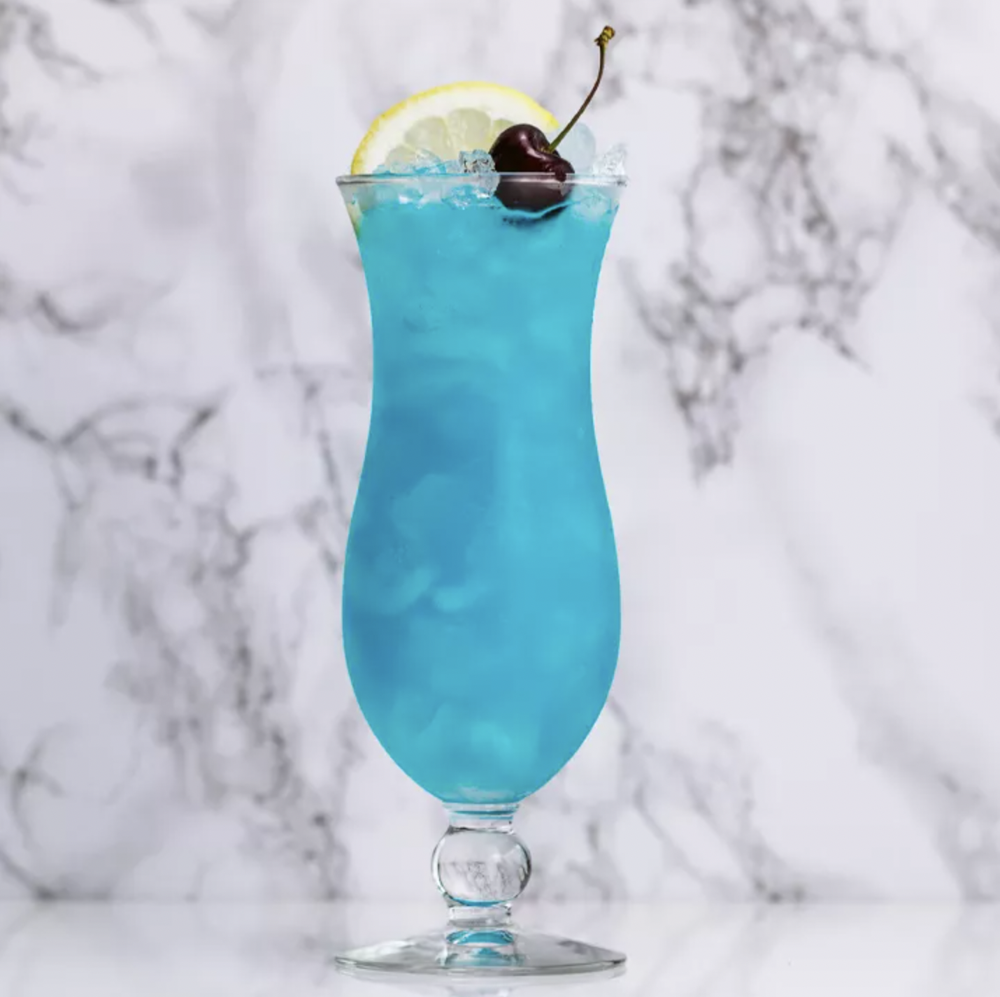

Leo: Blue Lagoon

A tiki bar favorite, the Blue Lagoon has refreshing notes of citrus mixed with sweet. The blue color certainly demands attention, much like the lion of the zodiac.
Ingredients
- 1 ounce vodka
- 1 ounce blue curaçao
- 4 ounces lemonade
- Garnish: lemon wheel
- Garnish: maraschino cherry
Steps
- Add the vodka, blue curaçao, and lemonade to a shaker with ice and shake until well-chilled.
- Strain into a hurricane glass over crushed ice.
- Garnish with a lemon wheel and maraschino cherry.